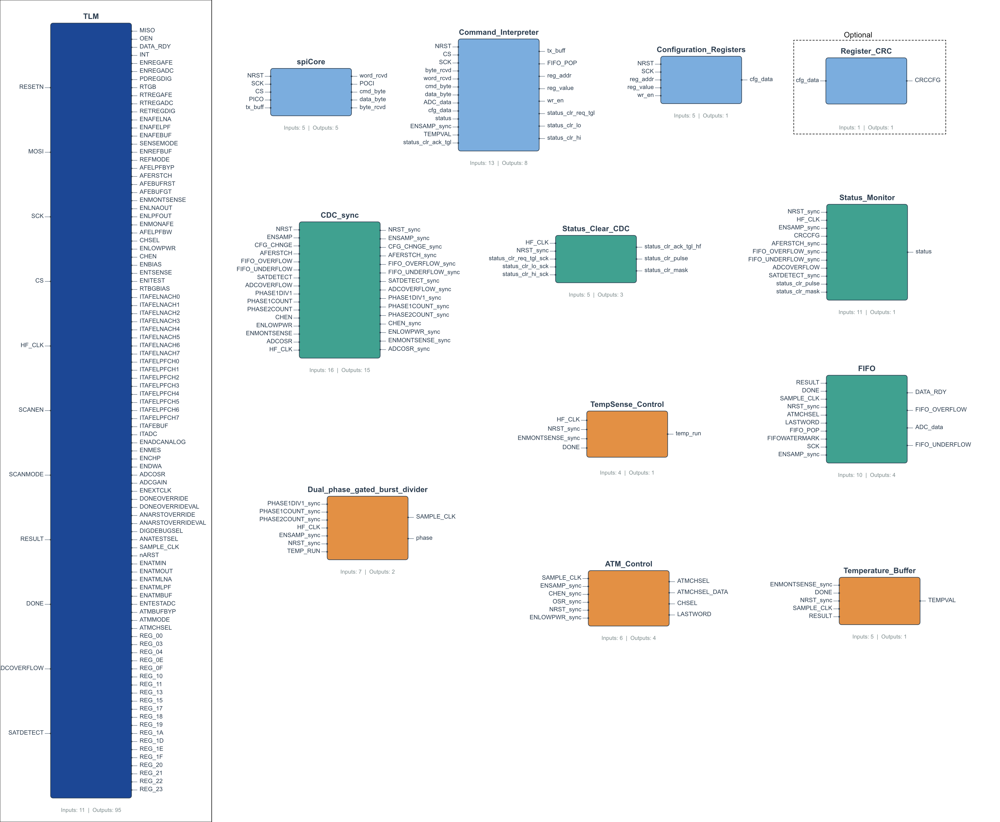

Pepper T4 System Overview - Block Diagram
This document provides a high-level overview of the TLM (Top Level Module) architecture, including a block diagram of the digital interactions and a description of the top-level interfaces.
Block Diagram
The following diagram illustrates the connectivity between the major submodules within the TLM.

Interface Description
The TLM module serves as the digital core, interfacing with the SPI master (external MCU/FPGA) and the analog frontend/ADC blocks.
Digital I/O (Control & SPI)
| Port Name |
Direction |
Description |
RESETN |
Input |
Active-low asynchronous reset. |
MOSI |
Input |
Master Out Slave In (SPI Data). |
MISO |
Output |
Master In Slave Out (SPI Data). |
SCK |
Input |
SPI Clock. |
CS |
Input |
Chip Select (Active Low). |
HF_CLK |
Input |
High-Frequency System Clock (Main digital clock). |
OEN |
Output |
Output Enable (Active low when CS is low OR scanning). |
DATA_RDY |
Output |
Indicates new data is available in the FIFO. |
INT |
Output |
Interrupt signal (Active High), driven by Status Monitor. |
Scan Chain
| Port Name |
Direction |
Description |
SCANEN |
Input |
Scan Enable. |
SCANMODE |
Input |
Scan Mode Select. |
| Port Name |
Direction |
Description |
RESULT [15:0] |
Input |
Digital output data from the SAR ADC. |
DONE |
Input |
Pulse indicating ADC conversion completion. |
ADCOVERFLOW |
Input |
ADC overflow flag. |
SATDETECT [7:0] |
Input |
Saturation detection flags from AFE. |
Analog Outputs (Control Signals)
These signals control the various analog blocks (AFE, ADC, Bias, etc.).
CREF (Reference Control)
| Port Name |
Width |
Description |
ENREGAFE |
1 |
Enable AFE Regulator. |
ENREGADC |
1 |
Enable ADC Regulator. |
PDREGDIG |
1 |
Power Down Digital Regulator. |
RTGB |
4 |
Resistor Tuning - Gap Band. |
RTREGAFE |
4 |
Resistor Tuning - AFE Regulator. |
RTREGADC |
4 |
Resistor Tuning - ADC Regulator. |
RETREGDIG |
4 |
Resistor Tuning - Digital Regulator. |
AFE (Analog Front End)
| Port Name |
Width |
Description |
ENAFELNA |
1 |
Enable LNA (Low Noise Amplifier). |
ENAFELPF |
1 |
Enable LPF (Low Pass Filter). |
ENAFEBUF |
1 |
Enable AFE Buffer. |
SENSEMODE |
1 |
Sensing Mode Select. |
ENREFBUF |
1 |
Enable Reference Buffer. |
REFMODE |
1 |
Reference Mode Select. |
AFELPFBYP |
1 |
Bypass LPF. |
AFERSTCH |
8 |
Reset Channel Switches. |
AFEBUFRST |
1 |
Reset AFE Buffer. |
AFEBUFGT |
2 |
AFE Buffer Guard Timing. |
ENMONTSENSE |
1 |
Enable Temperature Sensor Monitor. |
ENLNAOUT |
1 |
Enable LNA Output. |
ENLPFOUT |
1 |
Enable LPF Output. |
ENMONAFE |
1 |
Enable AFE Monitor. |
AFELPFBW |
8 |
LPF Bandwidth Control. |
CHSEL |
8 |
Channel Select (Global). |
ENLOWPWR |
1 |
Enable Low Power Mode. |
CHEN |
8 |
Channel Enable Mask. |
BIAS (Bias Currents)
| Port Name |
Width |
Description |
ENBIAS |
1 |
Enable Bias Generation. |
ENTSENSE |
1 |
Enable Temperature Sensor Bias. |
ENITEST |
1 |
Enable Current Test. |
RTBGBIAS |
4 |
Resistor Tuning - Bandgap Bias. |
ITAFELNACHx |
4 |
LNA Bias Current (Channels 0-7). |
ITAFELPFCHx |
4 |
LPF Bias Current (Channels 0-7). |
ITAFEBUF |
4 |
AFE Buffer Bias Current. |
ITADC |
4 |
ADC Bias Current. |
ADC (Analog to Digital Converter)
| Port Name |
Width |
Description |
ENADCANALOG |
1 |
Enable Analog ADC parts. |
ENMES |
1 |
Enable Measure. |
ENCHP |
1 |
Enable Chopping. |
ENDWA |
1 |
Enable Data Weighted Averaging. |
ADCOSR |
4 |
ADC Oversampling Ratio. |
ADCGAIN |
4 |
ADC Gain Setting. |
ENEXTCLK |
1 |
Enable External Clock. |
DONEOVERRIDE |
1 |
Override DONE signal. |
DONEOVERRIDEVAL |
1 |
Value for DONE Override. |
ANARSTOVERRIDE |
1 |
Override Analog Reset. |
ANARSTOVERRIDEVAL |
1 |
Value for Analog Reset Override. |
DIGDEBUGSEL |
3 |
Digital Debug Select. |
ANATESTSEL |
3 |
Analog Test Select. |
SAMPLE_CLK |
1 |
Generated Sampling Clock for ADC. |
nARST |
1 |
Analog Reset (Active Low) - Controls ADC timing. |
ATM (Analog Test Mode)
| Port Name |
Width |
Description |
ENATMIN |
1 |
Enable ATM Input. |
ENATMOUT |
1 |
Enable ATM Output. |
ENATMLNA |
1 |
Enable ATM LNA. |
ENATMLPF |
1 |
Enable ATM LPF. |
ENATMBUF |
1 |
Enable ATM Buffer. |
ENTESTADC |
1 |
Enable Test ADC. |
ATMBUFBYP |
1 |
Bypass ATM Buffer. |
ATMMODE |
3 |
ATM Mode Select. |
ATMCHSEL |
8 |
ATM Channel Select (Muxed). |
Raw Register Outputs
Ports REG_00 through REG_23 expose the raw configuration register bits for debug or direct control purposes.